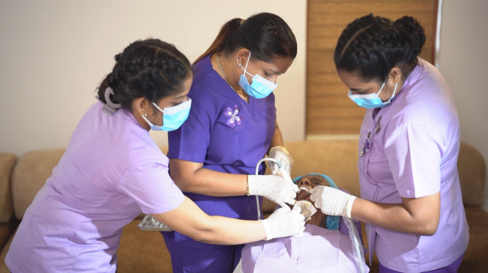
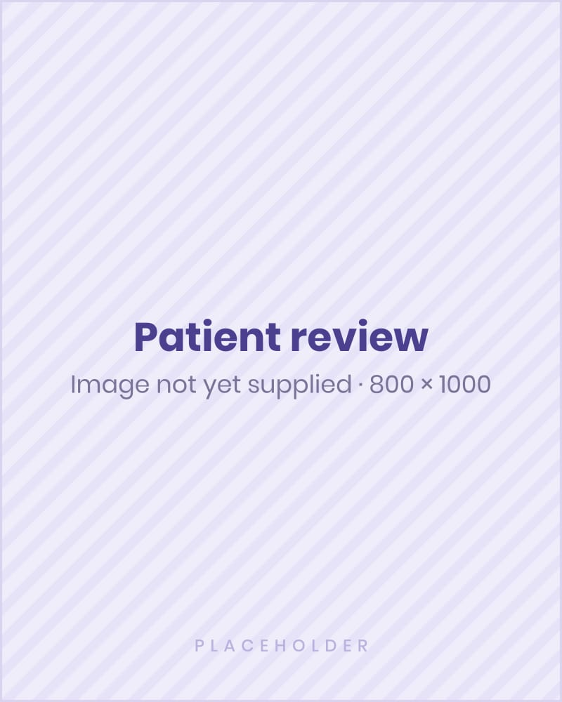

Danthaja In-House Aligners
A locally managed, technology-driven pathway for mild orthodontic concerns — practical, competitively positioned, and locally supported, with clinical oversight by Dr Surain Gomez.
- Ideal for
- Mild cases, students, young professionals, wedding clients, and accessible smile improvement.
- Core message
- Locally managed, convenient, competitively priced, clinically overseen.

